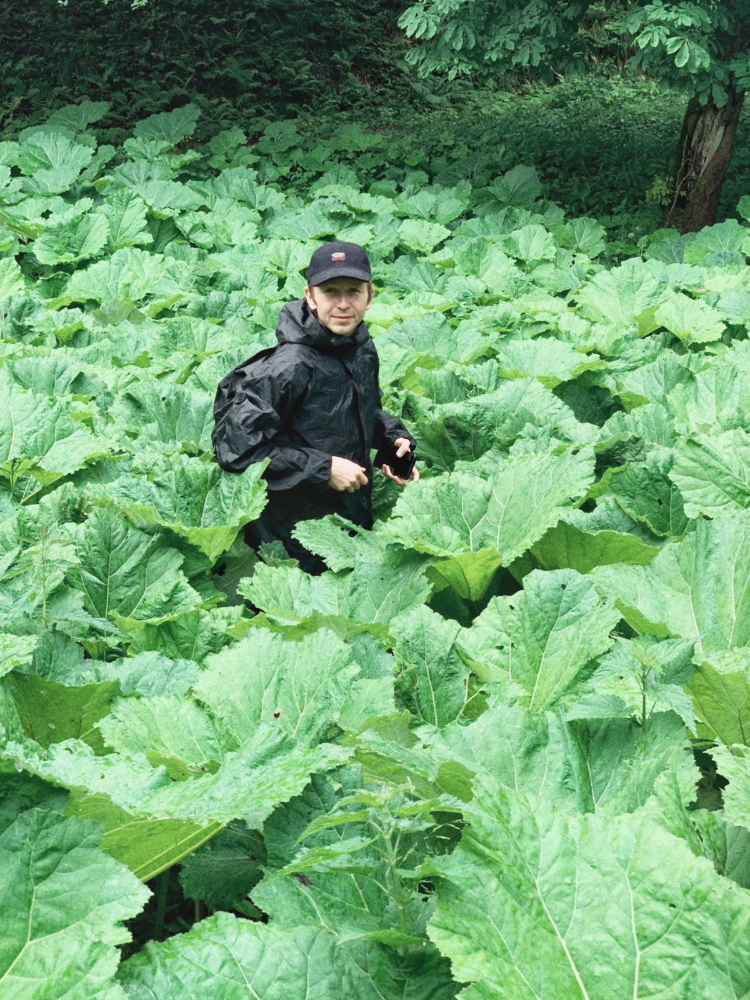

As a multimedia artist and writer, my work centers on engaging with people and delving into physical and philosophical investigations of trauma, sustainability, and narratives. I strive to connect my experiences of pain, trauma, and anxiety with transformative approaches in writing and physical activities like dance, improvisation, and visual-creative exercises.
My visual practice encompasses painting, sound, graphic design, video, and the manipulation of found objects, often recycled, to integrate sustainability into my work.
The use of diverse mediums allows me to convey the complexity of the themes I address, offering a sensory experience that transcends traditional storytelling.
